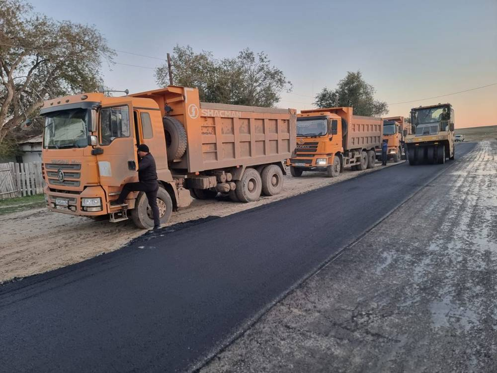

Строительно-дорожная компания · Актобе · с 2018 года
Строим, ремонтируем и содержим дороги
Дорожные работы, благоустройство, уличное освещение и инженерные сети в Актюбинской области. Своя техника, свой персонал, государственная лицензия II категории.
Лицензия ГСЛ №03831 · II категория
О компании
Дорожные и городские работы под ключ
ТОО «Kalau Plus» работает с 2018 года. Мы выполняем государственные и коммерческие заказы: от ямочного ремонта и зимней уборки улиц до реконструкции автодорог, благоустройства парков и прокладки инженерных сетей.
Работы выполнены в Актюбинской, Костанайской и Кызылординской областях. Материально-техническая база включает дорожно-строительную технику, грузовой транспорт и оборудование для содержания дорог летом и зимой.

Услуги
Шесть направлений работы
Ведём объект целиком: подготовка основания, строительство, сети, благоустройство и дальнейшее содержание.
Проекты
Выполненные договоры
Избранные государственные и коммерческие контракты с 2020 по 2026 год.
Суммы указаны по договорам, в тенге.
Фото
С наших объектов
Фотографии сделаны нашими бригадами на площадках. Нажмите на снимок, чтобы открыть крупно.
Почему мы
Преимущества работы с нами
Документы
Благодарственные письма и сертификаты
Отзывы акиматов, маслихата и жителей сёл, где мы работали и которым помогали.
Государственная лицензия
ГСЛ №03831
Лицензия подтверждает право на выполнение строительно-монтажных работ, включая строительство и капитальный ремонт автомобильных дорог, инженерных сетей и объектов гражданского строительства.
- Дата выдачи
- 16.10.2017
- Вид деятельности
- Строительно-монтажные работы
- Категория
- II категория
- Лицензиар
- Управление государственного архитектурно-строительного контроля г. Астаны
- Место выдачи
- г. Астана
Страницы лицензии и приложения
Контакты
Расскажите о вашем объекте
Позвоните или напишите на почту. Выедем на место, оценим объём и подготовим коммерческое предложение.
- Телефон
- 8 (702) 811-05-04
- Телефон
- 8 (777) 089-00-40
- tookalauplus@mail.ru
- Адрес
- Республика Казахстан, 030700, г. Актобе, ул. Маресьева, 105, оф. 301
Директор
Айбосынов Канат Болатбекович
Реквизиты
БИН 100240003140
Лицензия ГСЛ №03831